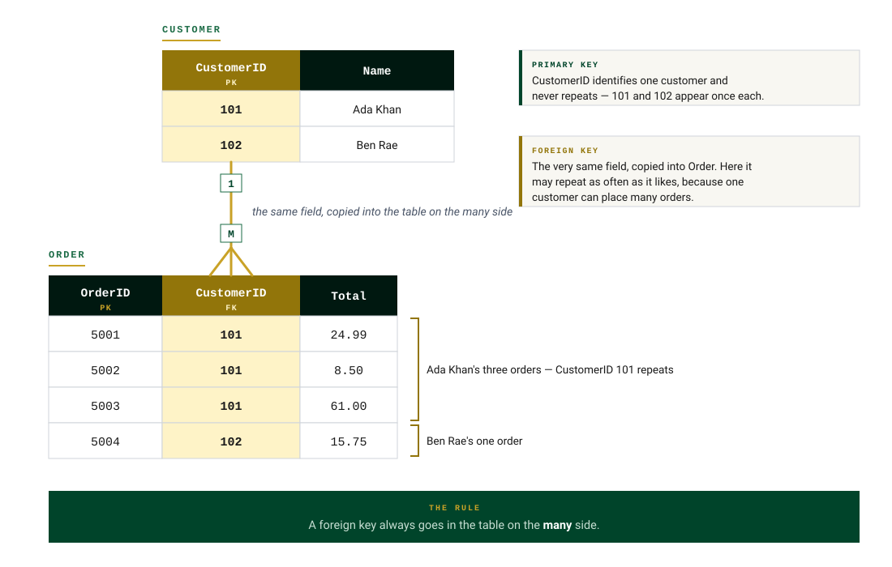

Relational Databases
A flat file database has just one table — and that causes problems. Imagine a single Pupil table that also stores each pupil's house and head of house:
| Forename | Surname | House | HeadOfHouse |
|---|---|---|---|
| James | Watson | Montgomerie | Mrs Newall |
| Sara | Boyd | Curie | Mr Todd |
| Lena | Weir | Curie | Mr Todd |
| Ross | Hill | Churchill | Ms Blair |
- Delete anomaly — if James Watson is deleted, so is the house Montgomerie and Mrs Newall.
- Update anomaly — if the Head of House for Curie changes, it needs changed in more than one place.
- Insert anomaly — a new house can't be added without adding a new pupil.
The solution is a relational database: split the data into two linked tables (Pupil and House). Now a new house can be added on its own, house details only need changed in one place, and removing a pupil doesn't remove a house. At National 5 you work with databases of two linked tables.
Database design uses three building blocks:
Primary & Foreign Keys
All entities must have a primary key — an attribute used to uniquely identify each record. The value in the primary key field is never repeated in another record. IDs, numbers, codes and registrations make natural primary keys (e.g. pupilID, ISBN for books).
Foreign keys are used to link entities in a relational database. A foreign key is an attribute in one entity that is the primary key of another entity — for example, PublisherID is the primary key of the Publisher table and appears in the Book table as a foreign key.

Referential integrity
When two tables are linked with primary/foreign keys, the data in both tables must "match" — this is referential integrity. If a Movies table stores a DirectorID, deleting that director while movies still reference them would break referential integrity — the foreign key would point at a record that no longer exists.
Data Dictionaries
The data dictionary helps us plan the content of a table. In the exam you're more likely to complete a partially-filled dictionary than create one from scratch. For each attribute it records:
- Entity name and attribute name (e.g. ProductName)
- Key — primary key (PK, one per table at N5) or foreign key (FK, "borrowed" from another table)
- Type — text, number, date, time or Boolean
- Size — for text, the number of characters needed (e.g. a 12-character name)
- Required — must the field be filled in? (The primary key is always required)
- Validation — any checks on the data entered
The four types of validation
| Entity: Product | Key | Type | Size | Required | Validation |
|---|---|---|---|---|---|
| productID | PK | Number | Yes | Presence check | |
| productName | Text | 20 | Yes | Presence check | |
| price | Number | Yes | Range: >0 and <500 | ||
| size | Text | 1 | Yes | Restricted choice: S, M or L | |
| supplierID | FK | Number | Yes | Presence check |
Entity-Relationship Diagrams
An entity-relationship (ER) diagram shows the structure of the database more clearly than a data dictionary. A relationship is a link between two entities describing how they are related.
At National 5 you work with one-to-many relationships: every record in one entity is linked with several records in the other. For example, one school has many teachers; one director directs many movies.
In an ER diagram:
- Entities (tables) are drawn as rectangles
- Attributes (fields) are drawn around each entity as ovals
- The primary key is underlined
- The foreign key is marked with an asterisk (*)
- The relationship line shows 1 at one end and many (crow's foot) at the other
Query Design
Before writing SQL, a query can be planned in a query design table stating the field(s), table(s), search criteria and sort order:
| Field(s) | forename, surname, town |
| Table(s) | Member |
| Search criteria | town = "Ayr" |
| Sort order | surname, ascending |
The design maps directly onto the SQL you'll meet on the next page: fields → SELECT, tables → FROM, search criteria → WHERE, sort order → ORDER BY.
Test Yourself
A library database has a Book table and a Publisher table (one publisher publishes many books). State a suitable primary key for the Publisher table, and explain how the two tables would be linked.
Marking Instructions
Primary key: publisherID (any unique identifier) (1 mark). The Book table contains publisherID as a foreign key, linking each book to its publisher (1 mark).
Name the most suitable validation for: a) a review score that must be between 1 and 5; b) a delivery option that must be "Standard" or "Express".
Marking Instructions
a) Range (1 mark). b) Restricted choice (1 mark).
A Publisher record is deleted while books in the Book table still reference it. State the problem this causes.
Marking Instructions
Referential integrity is broken — the foreign key in Book points to a publisher record that no longer exists.